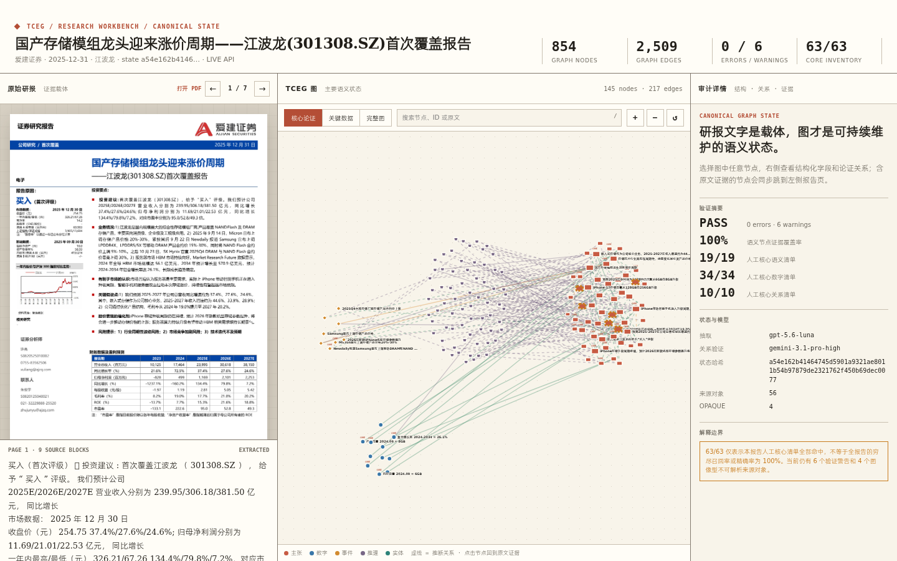

全部节点
Current reproducible state
最终产物不是摘要文本，而是一份带状态哈希、证据和测试结果的图。

全部关系边
语义节点具有证据
人工核心清单命中
VALIDATION PASS · 0 errors · 6 warnings
负向测试覆盖伪造 quote、未验证推断、缺少数字语境、非法置信度与证据空白归一化。
核心清单：语义 19/19 · 数字 34/34 · 关系 10/10。
STATE a54e162b4146…
TCEG METHOD
Result · Graph State & Validation
Current reproducible state

全部节点
全部关系边
语义节点具有证据
人工核心清单命中
VALIDATION PASS · 0 errors · 6 warnings
负向测试覆盖伪造 quote、未验证推断、缺少数字语境、非法置信度与证据空白归一化。
核心清单：语义 19/19 · 数字 34/34 · 关系 10/10。
STATE a54e162b4146…